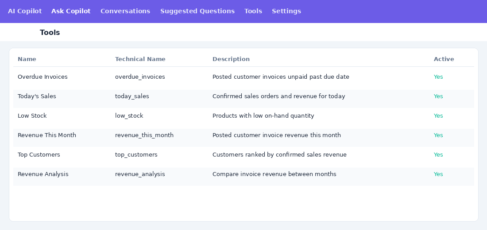

AI Chatbot
Ask everyday business questions in plain language. Get answers from live Odoo data with one-click actions.
Odoo 19 Community
ARMORA IT Technologies
Sales, Accounting, Inventory, CRM
Multi-company

Ask everyday business questions in plain language. Get answers from live Odoo data with one-click actions.
Managers lose time opening menus, building filters, and jumping between apps to answer simple questions like overdue invoices, today's sales, or low stock.
AI Chatbot is an Odoo-native copilot. Users ask in natural language, the intent engine picks the right tool, and Odoo returns a clear answer with optional action cards to open lists or create follow-ups.
Maps questions like "Show overdue invoices" or "Why did revenue drop?" to the right Odoo tool.
20+ read-only helpers across sales orders, invoices, stock, and CRM leads.
Conversation view with suggested questions, draft input, and assistant replies.
Jump to filtered lists or schedule activities without leaving the chat.
Configure OpenAI or compatible API endpoints from Odoo Settings.
Separate user and manager roles with access rules on chats and tools.

Ask Copilot with suggested questions and action cards

Enable the copilot and configure your AI provider

Conversation history per user

Extensible tool registry for managers
Today's sales, pending quotations, top customers, best-selling products.
Overdue invoices, revenue this month, expenses, profit, revenue analysis.
Low stock, negative stock, products not moved, stock valuation.
rn_ai_employee).19.0.2.7.0 Renamed models to rn.ai.employee.*, aligned security and settings with module technical name.
19.0.1.0.0 Initial commercial release with copilot chat, tool registry, and Apps Store assets.